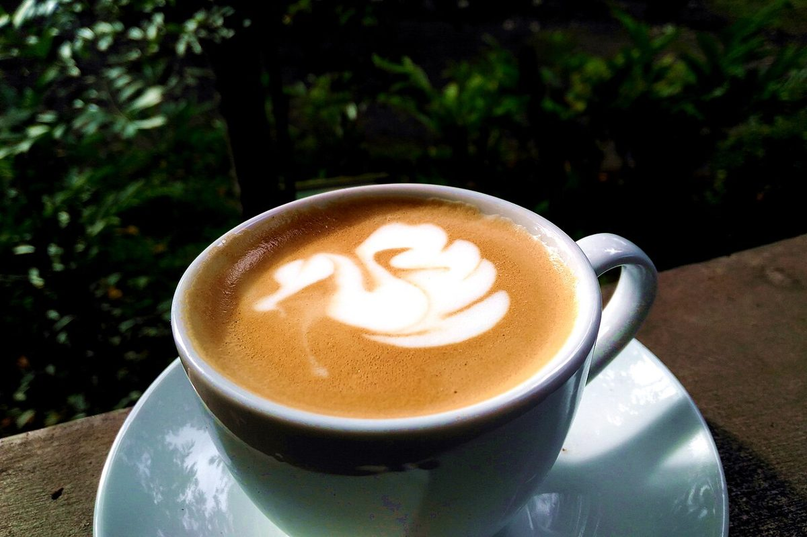
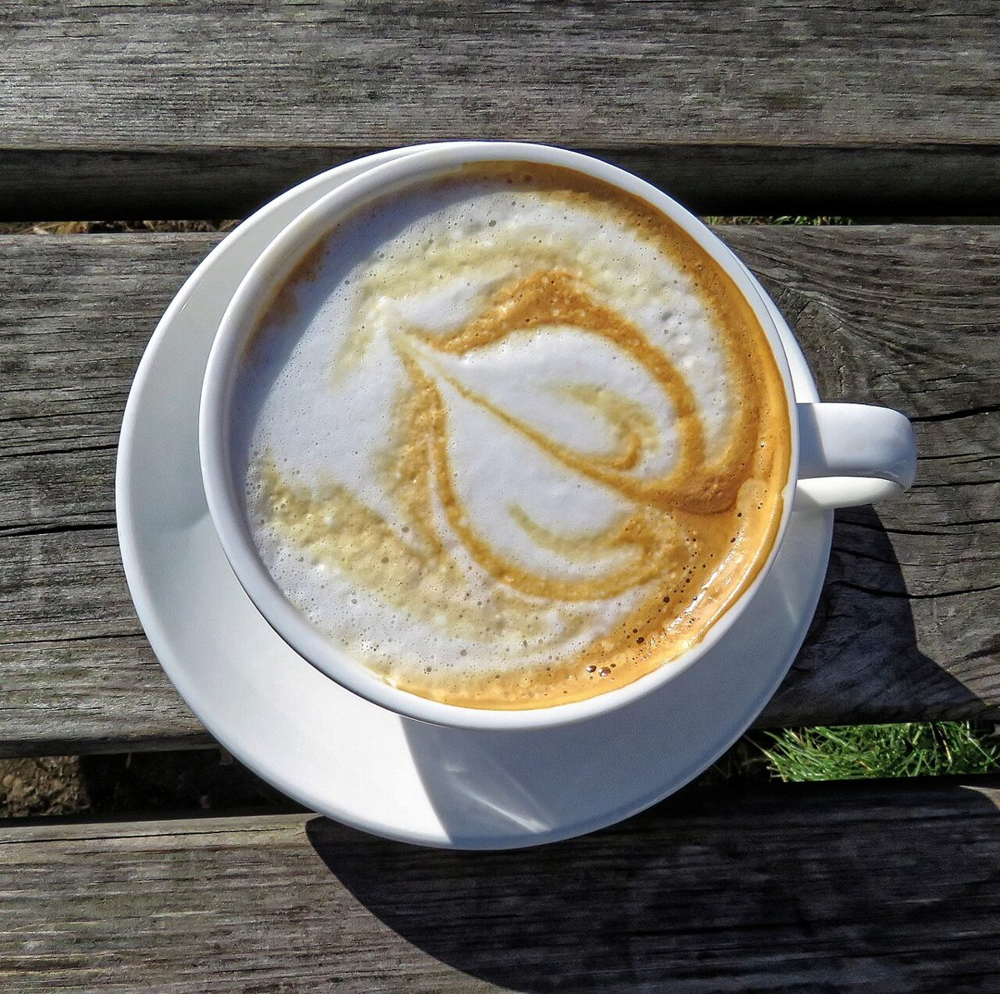
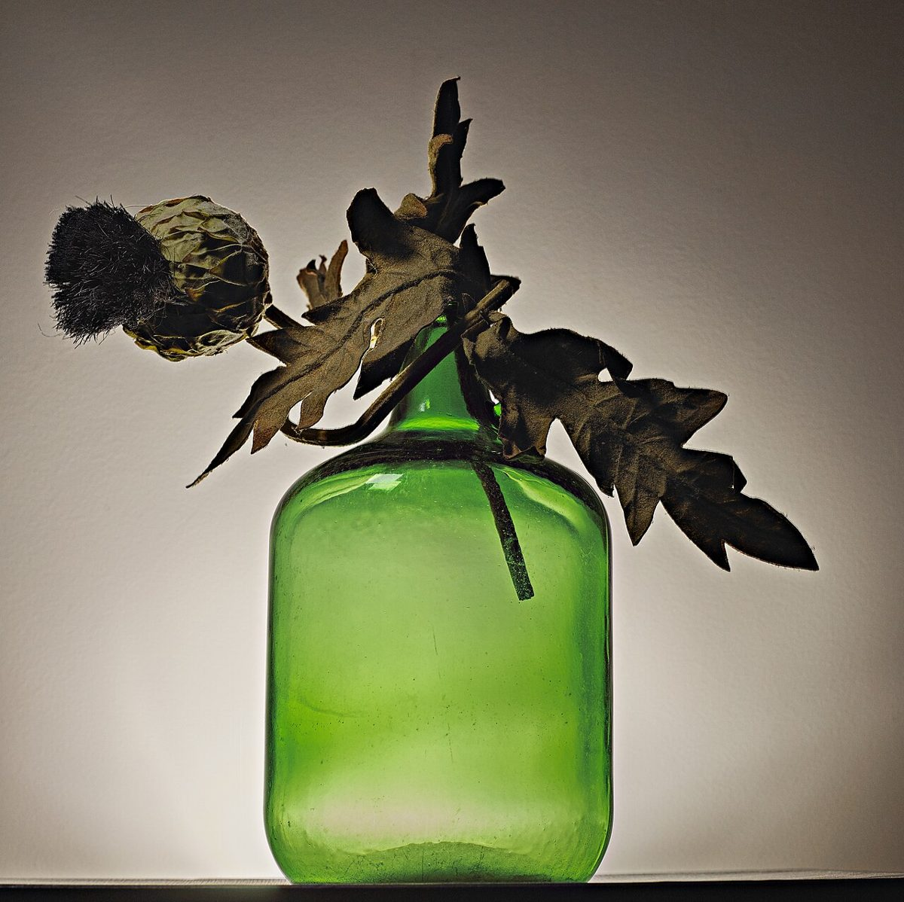

4B / メニュー
メニュー
メニューとお値段は準備中です。確認でき次第、こちらに載せます。
確認中の項目
| お飲み物 | 準備中 |
|---|---|
| お食事・甘いもの | 準備中 |
| 価格 | 準備中 |
| ご予約 | 準備中 |
お店が何を提供しているかは確認できていないため、下の写真はすべてイメージで、実際の商品ではありません。
イメージ写真
カップの濃淡見本(イメージ)





4B / メニュー
メニューとお値段は準備中です。確認でき次第、こちらに載せます。
| お飲み物 | 準備中 |
|---|---|
| お食事・甘いもの | 準備中 |
| 価格 | 準備中 |
| ご予約 | 準備中 |
お店が何を提供しているかは確認できていないため、下の写真はすべてイメージで、実際の商品ではありません。
イメージ写真


